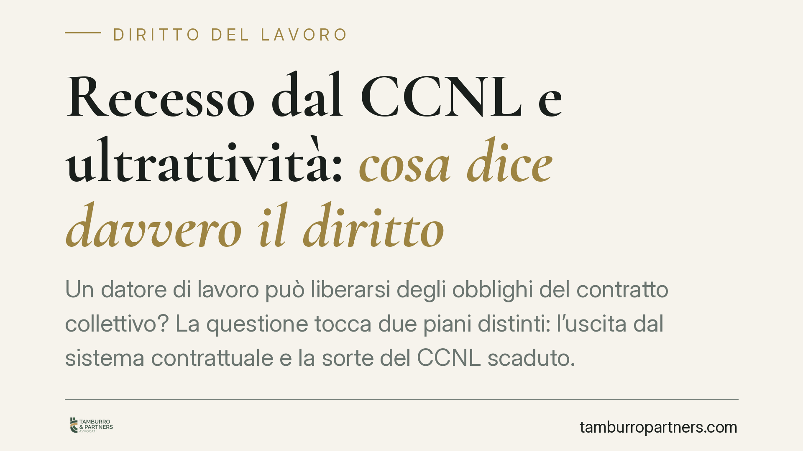

Recesso dal CCNL e ultrattività: cosa dice davvero il diritto
Un datore di lavoro può liberarsi degli obblighi del contratto collettivo? La questione tocca due piani distinti: l'uscita dal sistema contrattuale e la sorte del CCNL scaduto. Il quadro reale è più articolato di quanto spesso si legge: l'ultrattività automatica non è la regola. Vediamo cosa prevede il diritto civile e cosa resta comunque vincolante.

Il tema: due questioni da non confondere
Quando si parla di "recesso dal CCNL" si sovrappongono in realtà due problemi diversi.
Il primo è l'uscita dal sistema contrattuale: il datore che intende non applicare più un contratto collettivo, tipicamente recedendo dall'associazione datoriale che lo ha sottoscritto o cessando di applicarlo di fatto.
Il secondo è la sorte del CCNL dopo la scadenza: quando un contratto collettivo giunge al termine e non è ancora rinnovato, le sue clausole continuano a valere? Questa è la questione dell'ultrattività.
Le due domande hanno risposte diverse e vanno tenute separate.
Inquadramento normativo
Il contratto collettivo di diritto comune (post-corporativo) è un contratto di diritto privato. La sua efficacia si regge sui principi generali degli artt. 1372 e 1373 c.c.: l'art. 1372 c.c. sancisce la forza di legge del contratto tra le parti; l'art. 1373 c.c. disciplina il recesso, ammesso quando previsto dalle parti o dalla natura del rapporto.
Va sgombrato il campo da un equivoco ricorrente: l'art. 2074 c.c., rubricato "Disdetta", appartiene al sistema corporativo dei contratti collettivi, sistema abrogato. La giurisprudenza lo ritiene pacificamente inapplicabile ai CCNL di diritto comune. Citarlo come regola generale sul recesso è quindi fuorviante.
Sull'ultrattività l'orientamento consolidato della Cassazione è più netto di quanto comunemente si creda: il CCNL scaduto non continua ad applicarsi automaticamente, salvo che una clausola espressa (le cosiddette clausole di ultrattività o "salvo rinnovo") lo preveda. In assenza di tale pattuizione, il contratto cessa di produrre effetti alla scadenza, secondo la logica dell'art. 1373 c.c. sui contratti a tempo determinato o comunque suscettibili di scioglimento.
Cosa cambia in concreto
Anche quando il CCNL cessa o viene abbandonato, non si crea un vuoto totale.
Primo: se il contratto individuale di lavoro richiama espressamente il CCNL ("si applica il contratto collettivo di categoria"), quel richiamo entra nel contratto individuale e non si estingue con la scadenza della fonte collettiva. Le condizioni recepite restano dovute finché il rapporto individuale non viene legittimamente modificato.
Secondo: opera l'art. 36 della Costituzione, che garantisce una retribuzione proporzionata e sufficiente. Alla scadenza del CCNL, il giudice può utilizzare i minimi tabellari del contratto collettivo di settore come parametro per determinare la retribuzione adeguata, anche in assenza di vincolo formale. Il datore, dunque, non è libero di ridurre i compensi al di sotto della soglia costituzionale.
Terzo: l'applicazione di fatto del CCNL — reiterata nel tempo — può generare aspettative e prassi che incidono sulla qualificazione del rapporto e sulla prova delle condizioni applicate.
La tensione tra autonomia collettiva e vincolo
Il punto delicato è il bilanciamento tra la libertà del datore di rideterminare il proprio assetto contrattuale e la tutela del lavoratore. La sostituzione di un CCNL con un nuovo accordo collettivo segue regole diverse rispetto all'uscita unilaterale dal sistema: nel primo caso subentra una nuova fonte collettiva; nel secondo il datore resta esposto al parametro dell'art. 36 Cost. e ai richiami contenuti nei singoli contratti.
La direzione dell'orientamento maggioritario, quindi, non è quella di un CCNL "immortale", ma di una tutela che passa attraverso il contratto individuale e la garanzia costituzionale, più che attraverso un'ultrattività automatica del collettivo.
Cosa fare in concreto
- Verificate il testo del CCNL applicato: controllate se contiene clausole di ultrattività o disdetta e con quali termini.
- Esaminate i contratti individuali: individuate se richiamano espressamente il contratto collettivo, perché quel richiamo sopravvive alla scadenza della fonte.
- Mappate le voci retributive: distinguete i minimi tabellari (ancorati all'art. 36 Cost.) dagli istituti derogabili, prima di ipotizzare modifiche.
- Documentate le prassi applicative: la reiterata applicazione di fatto può produrre effetti sul rapporto e va valutata caso per caso.
- Distinguete le operazioni: sostituzione con un nuovo accordo e uscita unilaterale dal sistema hanno presupposti e conseguenze giuridiche differenti.
Disclaimer
Contributo informativo a cura di Tamburro & Partners - Avv. Giuseppe Tamburro. Non costituisce parere legale.
Ogni storia di lavoro ha i suoi tempi.
Se gestisci HR e vuoi un confronto su contenzioso, ispezioni o licenziamenti, scrivi allo studio. Ti rispondiamo entro un giorno lavorativo.